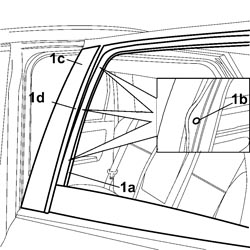

7010E52 REAR DOOR FRONT PILLAR TRIM - R R
- Path
- Procedures > 70 FITTINGS > 7010 PASSENGER COMPARTMENT REAR SIDE DOORS > 7010E REAR SIDE DOOR TRIM > 7010E52 REAR DOOR FRONT PILLAR TRIM - R R
- Kind
- repair procedure (removal / refitting; the operation number is the code)
- Applies to
- all engines; all production periods
- Interactive page
- https://sloeber94.github.io/elrnDB-fCrm/en/#/194000925
Applies to: all engines; all production periods
 Removing
Removing
 Refitting
Refitting- Open the front side door.
- Completely lower the window.
Op. 7010D26 REAR SIDE DESCENDING WINDOW GLASS SCRAPER (OUTER) (ONE), LEFT OR RIGHT - R.R
1. Release the outer casing (1a) as necessary, undo the fixing bolts (1b) and remove the pillar trim (1c) releasing the lowering window glass channel from it.

Applies to: all engines; all production periods
Refitting
Removing- Fit the door pillar trim in place.
- Tighten the retaining bolts.
- Fit the lowering window channel checking that it adheres perfectly to the seat.
- Fit the outer casing in position.
Op. 7010D26 REAR SIDE DESCENDING WINDOW GLASS SCRAPER (OUTER) (ONE), LEFT OR RIGHT - R.R